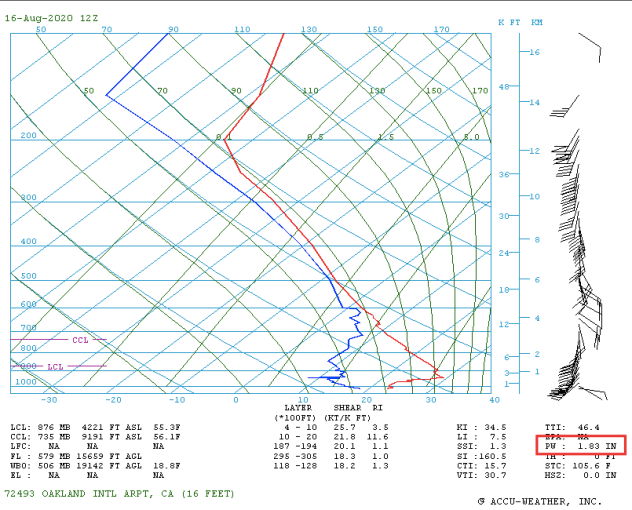

Recapping a wild weather weekend in the West
Published Aug. 17, 2020 9:45 PM

The ridge in the jet stream actually turned out a bit stronger and a tad farther west over the weekend, helping to push
temperatures to record levels back to the coast.
San Francisco reached a high of 99 degrees on Friday, with Monterey reaching 101 degrees. Both temperatures were record highs for not just the day, but the month of August as well.
In Seattle, temperatures soared to a high of 98 degrees on Sunday, which was the highest temperature recorded in the city since the summer of 2009.
And of course, the headliner of the weekend was the high temperature of 130 degrees in Death Valley, which was the hottest temperature recorded at the
site since 1913. It also broke the August record by 3 degrees.
...

This situation was the opposite of that. It's similar to the situation that develops when condensation trails form behind a jet flying high above us.
Once the exhaust leaves the jet,it soon moves at the mercy of the winds at that elevation, which are typically much less than the jet's speed.
The other wild weather this weekend was the unusual cluster of thunderstorms that rolled along the California coast Sunday.
The storms were fueled by a surge in moisture coming up from the south. I use precipitable water in this blog a lot to track the magnitude and location of moisture surges.
This one was particularly significant.
The weather balloon launched in Oakland, California, on Sunday morning recorded a precipitable water value of 1.83 inches, which was the highest value recorded at the site since
records began in 1948.
The surge in moisture (partially linked to Tropical Storm Fausto in the eastern Pacific) helped to fuel thunderstorms with strong winds and frequent lightning around the
San Francisco Bay Area and all along the Northern California coast.
The amount of lightning was pretty remarkable for this part of the country. Take a look at the lightning strikes over a 24-hour period (Saturday afternoon through Sunday afternoon)
across the Southwest. Over 9,000 lightning strikes were recorded.
 " height="400"; width="600"/>
There are still some thunderstorms around on Monday, and with the heat wave persisting through the early part of the week before easing,
the environment will continue to be ripe forwildfires.
In addition, thunderstorms across interior parts of the Northwest early this week will bring the potential for dry lightning. This will bring further concern for wildfires,
especially with temperatures running so high.
Across the Southwest, the persistent ridge in the jet stream will keep the extreme heat going through much of the week. However, monsoon thunderstorms will occasionally bring
some rain and clouds to help cool things off a bit. These storms will also bring the threat for some dust storms as well, just like we've seen over the past couple of days.
So for the week ahead, we'll be keeping an eye on the monsoon, the heat easing a bit and also the progress of Hurricane Genevieve. The storm will track northwestward over
the next several days, and while it will weaken as it does so, it will potentially spread some moisture into California toward the weekend. While it's way too early to say
if and to what extent the moisture reaches the Southwest, it could bring an elevated chance for thunderstorms again. I'll take a closer look at that a little later in the week.
" height="400"; width="600"/>
There are still some thunderstorms around on Monday, and with the heat wave persisting through the early part of the week before easing,
the environment will continue to be ripe forwildfires.
In addition, thunderstorms across interior parts of the Northwest early this week will bring the potential for dry lightning. This will bring further concern for wildfires,
especially with temperatures running so high.
Across the Southwest, the persistent ridge in the jet stream will keep the extreme heat going through much of the week. However, monsoon thunderstorms will occasionally bring
some rain and clouds to help cool things off a bit. These storms will also bring the threat for some dust storms as well, just like we've seen over the past couple of days.
So for the week ahead, we'll be keeping an eye on the monsoon, the heat easing a bit and also the progress of Hurricane Genevieve. The storm will track northwestward over
the next several days, and while it will weaken as it does so, it will potentially spread some moisture into California toward the weekend. While it's way too early to say
if and to what extent the moisture reaches the Southwest, it could bring an elevated chance for thunderstorms again. I'll take a closer look at that a little later in the week.
Tropical climate zones are expanding poleward
Published Aug. 11, 2020 9:32 PM

Earth's tropical regions, which are generally characterized by high average temperatures and heavy rainfall, are expanding poleward, according to a new study published in the American Geophysical Union's (AGU) journal of Geophysical Research. However, the leading edges of these tropical climate zones are typically hot and dry. These leading edges of the tropical climate zones have expanded over the past 15 years, with the greatest advancement occurring in the Southern Hemisphere, according to the AGU report. ... Based on satellite observations, the tropical zones are advancing at a rate of 0.25 to 0.50 degrees latitude per decade. Researchers are still uncertain if this rate will increase, decrease or remain the same over the coming decades. The trigger for this expansion is likely a result of ocean warming due to climate change, which also helps explain the greater expansion into the Southern Hemisphere which has a much larger water surface than the Northern Hemisphere.
TGlobal ice losses continue to mount
Published Aug. 19, 2020 12:11 AM

Earth's tropical regions, which are generally characterized by high average temperatures and heavy rainfall, are expanding poleward, according to a new study published in the American Geophysical Union's (AGU) journal of Geophysical Research. However, the leading edges of these tropical climate zones are typically hot and dry. These leading edges of the tropical climate zones have expanded over the past 15 years, with the greatest advancement occurring in the Southern Hemisphere, according to the AGU report. ... Based on satellite observations, the tropical zones are advancing at a rate of 0.25 to 0.50 degrees latitude per decade. Researchers are still uncertain if this rate will increase, decrease or remain the same over the coming decades. The trigger for this expansion is likely a result of ocean warming due to climate change, which also helps explain the greater expansion into the Southern Hemisphere which has a much larger water surface than the Northern Hemisphere.
Perseid meteor shower peaks tonight
Published Aug. 11, 2020 9:30 PM

The best meteor shower of the year occurs tonight! Grab a seat outside after sunset to watch the show!
The peak of the shower is the night of Aug. 11 into Aug. 12 (Tuesday night into Wednesday morning). It will produce up to 100 meteors per hour on the peak night.
The 2020 version of the Perseid meteor shower will be slightly obscured by a bright moon. The moonlight will make it hard to see the faint meteors. However, the Perseids are known for very bright meteors!
Check out some of my shots from last year's show.
... Even though the Perseids will be most active after midnight, I encourage people to start looking once it gets dark in the evening. You will be more likely to see a long-lived, bright meteor fly across a large portion of the sky during the evening. Plus, the moon rises after midnight, and it will wash out some meteors.
VIEWING TIPS
To get the most out of your Perseid meteor viewing experience, follow these steps:
1) Dedicate a solid hour to doing nothing but looking for meteors. If you look for only a few minutes, you might not see any.
2) Make yourself comfortable. Lay back on a lounge chair or a blanket on the grass. Don’t sit in a normal chair and look up; your neck will quickly get tired.
3) Avoid looking at ANY source of light. No phones! Turn off all exterior lights. Try not to look directly at the moon either (for those watching after midnight).
Viewing Conditions

For Asian viewers, the best nights will be Tuesday night and Wednesday night. The absolute peak of the shower will occur Wednesday evening local time in Japan.

Send us your pictures or stories of your experiences with the 2020 Perseids meteor shower! Thanks for reading. Just look up; you never know what you will see!
Death Valley reports world's hottest temperature on record in 89 years

Death Valley was scorched over the weekend when temperatures reached 130 degrees Fahrenheit on Sunday, making it the hottest recorded temperature on Earth since 1931. The World Meteorological Organization (WMO) will investigate to confirm the temperature reading, which AccuWeather Senior Weather Editor and Meteorologist Jesse Ferrell said could take anywhere from weeks to months and sometimes even years. ... "The investigations are extensive and involve a committee, looking into instrument trustworthiness and calibration, proper 'siting' -- location of the instruments at proper height, with proper ground covering, sufficient shelter from sunlight and distance away from buildings," Ferrell explained. "They also look at nearby weather stations to compare readings, taking into account localized conditions on the day in question." In 1931, Tunisia recorded 131 degrees Fahrenheit, surpassing the Death Valley record from Sunday by just one degree. The only higher temperature ever recorded was 134 degrees, also reported in Death Valley from 1913. While the elevation of the actual valley is very low, it is surrounded by sky-high mountains, peaking at 6,000 feet above sea level on both sides. The valley is also extremely narrow -- only about 10 miles across. Due to thermodynamics, air becomes hotter as it sinks lower, typically at a rate of five to six degrees per 1,000 feet. Because the air in Death Valley has to travel from the high peaks of the mountains all the way down to the depths of the narrow valley, it gets very hot. "The sinking air is more prevalent in Death Valley than just about anywhere else since it is such a low elevation surrounded by very high elevations," Samuhel said. The sinking air also makes for a very dry environment. A typical year will bring only 2.36 inches of rain to Death Valley, compared to an average of 45 to 50 inches a year in parts of the East Coast. This year, the monsoon which typically brings moisture to the area has been very weak, resulting in even less rainfall for the Southwest. The weather pattern responsible for the record-shattering heat in Death Valley was also responsible for a slew of other records west of the Rockies. Samuhel said that every state west of the Rocky Mountain Range, aside from Montana and Wyoming, set a record high temperature for the date on Sunday.